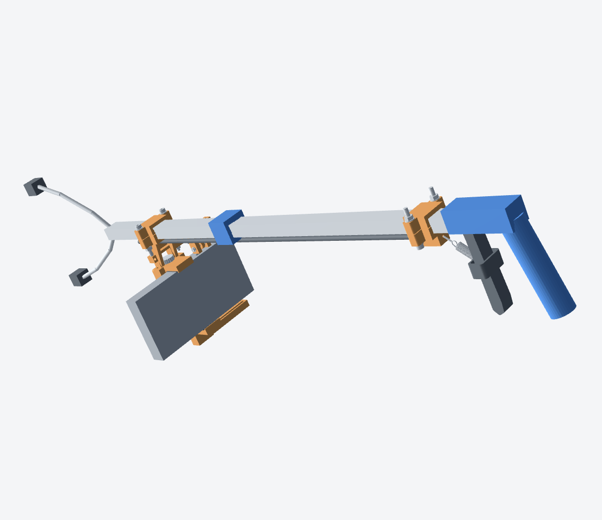

See the moment
Video from the grabber’s point of view preserves the approach to a piece of litter.
01 / THE IDEA
Sidewalks, parks, and streets are unpredictable. Litter comes in every shape, in every setting. A robot that might someday help clean them needs to learn from the real thing.
We’re starting with people. Each attempt to pick something up can become an example of what was seen, what was tried, and what happened next.
See how we’re startingTHE WHOLE STORY MATTERS
A useful dataset should include the moments that are easy to overlook.
02 / HOW IT WORKS
A person uses an ordinary reacher grabber and a separate collection bucket. A phone near the claw records the approach; a simple mechanical link marks each squeeze.
Video from the grabber’s point of view preserves the approach to a piece of litter.
The grabber’s squeeze creates a marker so the pickup attempt can be found again.
Deposits, misses, drops, and uncertainty can all inform careful human review.
03 / THE PROJECT
This is an early research and product project. We’re designing a practical way to collect real pickup examples, then exploring how those examples could support perception and learning.
Our current reacher retrofit is a CAD fit prototype. Its grip, cable motion, and field performance still need physical validation.
Explore the documentation
EVERY ATTEMPT IS A DATA POINT